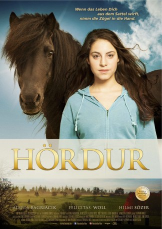

#7761 Hördur - Zwischen den Welten
 
 IMDB-Wertung: 7.1 / 10
IMDB-Wertung: 7.1 / 10  Metascore: 0
Metascore: 0 
After a run in with the Law, Aylin a 17yr old muslim Girl part of the Turkish diaspora in Germany finds herself sentenced to community service at an out of town horse stable. Beset by trouble at home and school, it is here that she, despite all odds is set on the road to self-discovery. As the pace quickens her blossoming relationship with the Stallion Hördur and her fledgling dreams are tested to breaking point. Can Aylin build a bridge between worlds? And if she can will others follow?
Jahr: 2015
Dauer: 80 Minuten
FSK: 6
Land: Deutschland Studio: NFP Marketing & DistributionTonspuren:
Untertitel:
Auflösung: 1080p (1920x1080) Größe: 3215 MB
Genre: Drama
Regisseur: Ekrem Ergün
Drehbuch: Dorothea Nölle
Soundtrack:
Darsteller:
 Almila Bagriacik als Aylin
Almila Bagriacik als Aylin- Özgür Karadeniz als Mahmut
- Ceci Chuh als Jaqueline
- Atilla Oener als Arbeitgeber
- Hilmi Sözer als Hasan
- Felicitas Woll als Iris
- Noë Chalkidis als
- Franziska Kleinert als Frau Thomas
- Selale Gonca Cerit als Nevin
- Canan Kir als Emel
- Camares Amonat als Sarah
- Fabio Seyding als Sebastian
- Asil Aydin als Abbas
- Fanny Töpper als Marie
- Helge Gutbrod als Herr Auer Sportlehrer (uncredited)
- Frank W. Rima als Straßenarbeiter (uncredited)
Datei: X:\2015(G-M)\Hördur - Zwischen den Welten (2015, FSK6, 1920x1080).mkv seit 15.12.2017
Festplatte: HD 2015(A-Z)
 Es gibt insgesamt 129 Filme in der Gruppe '2015(G-M)'
Es gibt insgesamt 129 Filme in der Gruppe '2015(G-M)'